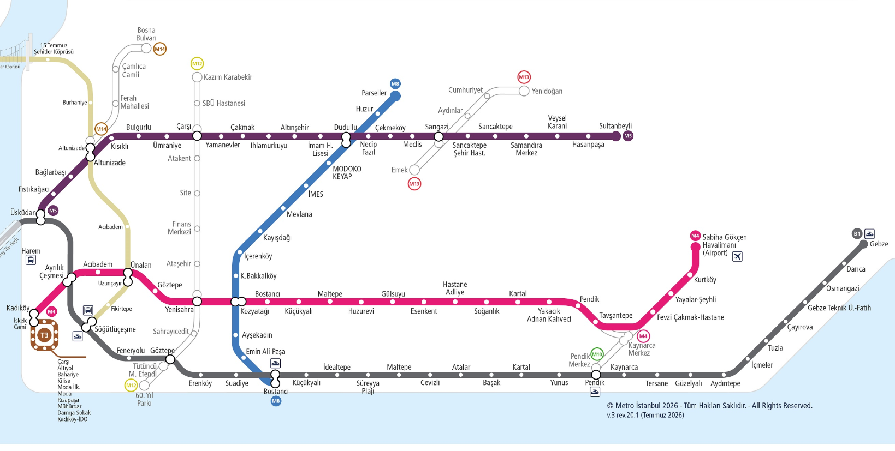

GÜNCEL DURUM VE İSTATİSTİKLER
İşletmedeki Hatlar
M4, M5, M8, T3, Marmaray
İnşa Halindeki Hatlar
M12, M10, M4B
Toplam Uzunluk
~120 km+
İstasyon Sayısı
~150+
RAYLI SİSTEMLER HARİTASI

Anadolu Yakası Güncel Raylı Sistemler Ağ Haritası
M4, M5, M8, T3, Marmaray
M12, M10, M4B
~120 km+
~150+
